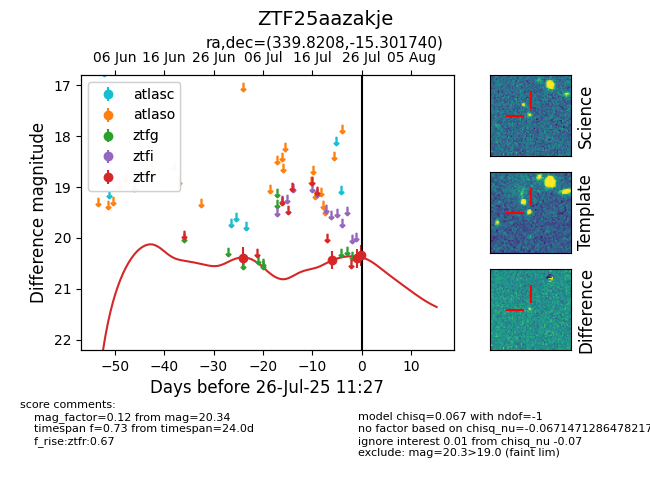

Target ZTF25aazakje at 2025-07-26 11:27, see:
FINK: fink-portal.org/ZTF25aazakje
Lasair: lasair-ztf.lsst.ac.uk/objects/ZTF25aazakje
ALeRCE: alerce.online/object/ZTF25aazakje
alt names
ZTF25aazakje (ztf,fink)
coordinates:
equatorial (ra, dec) = (339.8208,-15.30174)
galactic (l, b) = (47.2101,-57.13647)
photometry
last ztfr=20.34
4 ztfr detections
